0. 总体流程与核心链路
GMP-ISE（Gmsh / MOOSE / ParaView 集成仿真环境）是一个 Qt 6 桌面应用，目标体验对齐 Abaqus 主线工作流
Part → Materials/Sections → Assembly → Step → BC/Load → Mesh → Job → Results。
软件的核心链路是：
.i→
作业提交到计算节点执行（mpiexec / Runner）→
回收 ExodusII 结果 .e→
后处理：云图 / 变形 / 探针 / 图表
- 预处理：基于 Gmsh C++ API（OpenCASCADE 几何内核），覆盖草图 → 零件特征 → 几何导入/布尔 → 物理组 → 网格剖分；同时通过模型树（Model Tree）维护材料、截面、分析步、边界、载荷等求解语义。
- 有限元计算：模型树一键同步生成 MOOSE
.i输入文件，经 Runner（local / wsl / remote-SSH）以独立进程调度 MOOSE 求解；作业状态、日志、耗时在 Job 页实时跟踪。 - 后处理：求解产出的
.e（ExodusII）自动挂入 Results 并载入内嵌 VTK 视图，支持变量云图、时间步、变形、探针、切片、截图等；网格.msh也可直接预览。
备注：什么是「基于 Gmsh C++ API（OpenCASCADE 几何内核）」？（点击展开）
这句话描述的是有限元分析（FEM）前处理阶段的软件开发架构。简单来说：“用 C++ 写代码，调用 Gmsh 这个开源库把物体切成网格；而在画这个物体的三维形状时，使用的是 OpenCASCADE 这个强大的三维建模数学引擎。” 可以把它拆解为三个核心模块来看：
1. Gmsh（网格划分器）
- 它是什么：一个非常著名的开源三维有限元网格生成器。
- 它的作用：要用计算机求解扩散方程等物理问题，需要把连续的物体（比如一块“方砖”）切成一个个离散的小网格（四面体或六面体）。Gmsh 的核心工作就是“切网格”——在 3D 空间中布点，并把这些点连成符合数学质量要求的几何单元。
2. C++ API（应用程序接口）
- 它是什么：意味着不是用鼠标点击 Gmsh 的图形界面（GUI）来操作，也不是写它自有的
.geo脚本文件，而是直接在代码层面调用它的链接库（gmsh.h+libgmsh）。 - 架构意义：这使网格划分能力被无缝嵌入到自研的 C++ 软件（即 GMP-ISE）中，实现“导入模型 → 自动划分网格 → 导出数据给求解器”的全流程自动化，用户无需打开任何第三方软件。
3. OpenCASCADE 几何内核（CAD 引擎）
- 它是什么：OpenCASCADE Technology（简称 OCCT）是一个开源的三维几何建模内核（类似于商业软件 SolidWorks 或 AutoCAD 底层的数学核心）。
- 为什么需要它：Gmsh 自带的内置几何模块（Built-in kernel）非常简陋，只能画基础的点、线、面，无法处理复杂的工业零件。
- 它的作用：启用 OpenCASCADE 内核意味着开启了 Gmsh 的高级模式，可以：
- 轻松导入复杂的工业标准 CAD 文件（如
.step/.iges格式）； - 在代码中进行复杂的布尔运算（比如用一个圆柱体去“挖空”一个长方体，或对边缘倒角）；
- 内核底层用 NURBS（非均匀有理 B 样条）极其精确地描述这些曲面。
- 轻松导入复杂的工业标准 CAD 文件（如
总结：它们是如何协同工作的？
以在自研软件里分析一个“带孔的散热器”为例，这套架构的工作流是：
- 指挥官（C++ API）：C++ 程序发出指令。
- 建模师（OpenCASCADE）：在内存中用精确的数学公式把“散热器”的 3D 实体构建出来，并精准地打出那个孔。
- 屠夫（Gmsh）：接手这个完美的 3D 实体模型，按照设定的尺寸（比如每 2mm 切一刀），把它密密麻麻地切成几十万个四面体小网格。
- 输出：C++ 程序拿到这几十万个网格节点的坐标和连接关系，把它们交给下一步的方程求解器（用来组装矩阵
KU=F）。
*.gmp.yaml。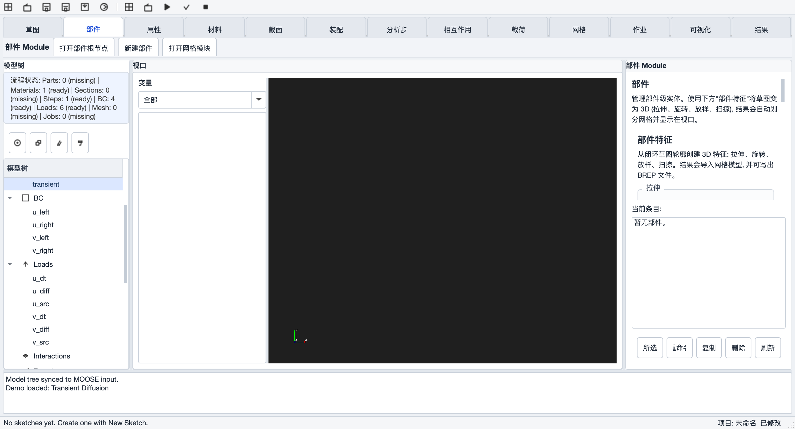
一、预处理（Preprocessing）
预处理对应 Abaqus 的 Sketcher / Part / Property / Assembly / Step / Interaction / Load / Mesh 模块，目标是形成求解所需的几何、网格（.msh）与模型语义（材料、边界、载荷、分析步）。
备注：预处理各功能的一般使用顺序（点击展开）
实际业务中，预处理通常按「先几何、再语义、后网格」的顺序推进。对应到 GMP-ISE 的模块页签，一般操作流程如下：
- 建立几何（草图 Sketch → 部件 Part）：先在「草图」页新建草图并绘制截面轮廓（线/圆/弧/矩形 + 约束与尺寸驱动），再到「部件」页用拉伸/旋转/放样/扫掠把闭环草图变成 3D 实体；特征完成后软件会自动剖分网格并载入视口。
若已有 CAD 模型，可跳过草图，直接在「网格」页的 Gmsh 面板导入 STEP/IGES/BREP，或用几何基元 + 变换 + 布尔运算搭建。 - 定义物理组（网格 Mesh 页 → Physical Groups）：为后续施加载荷和边界做准备——给实体建体组（如
solid），给关键表面建边界组（如left/right）。物理组名会贯穿后续的 BC 绑定与材料指派。 - 定义材料与截面（材料 Material / 截面 Section）：新建材料并填写参数（可用模板，如常数材料、线弹性、热膨胀）；需要时建 Solid Section 记录「材料 → 区域」的指派关系。
- 定义分析步（分析步 Step）：按求解类型选 Static / Transient / Steady 预设，填写 dt、步数、结束时间等。（当前版本仅第一个分析步生效，多步仅作序列预览。）
- 施加边界与载荷（载荷 Load 页 + 模型树 BC 根）：在 BC 根下建 Dirichlet/Neumann 边界并绑定到第 2 步的边界组（可用「从物理组生成边界」一键生成后修改数值）；在 Loads 下建体力/热源并绑定体组。必要时在 Functions / Variables 根下补充函数与求解变量。
- 剖分网格（网格 Mesh 页）：设置全局尺寸 / 尺寸场 / 2D-3D 算法 / 单元阶数，点「生成网格」；生成后自动写出
.msh、载入视口预览，并在日志中给出质量统计（minSICN）。可在视口中用分组/实体拾取核对物理组是否正确。 - 检查并同步（属性 Property 页 + 模型菜单）：用属性编辑器的「校验汇总」全树扫描必填项缺漏；确认无误后执行「同步模型到 MOOSE 输入」（Ctrl+Shift+R）生成
.i，进入求解阶段。
快捷方式：作业/网格页的「补齐流程默认节点」+「生成并提交」可自动补齐最小流程节点（Part/Material/Section/Step/BC/Load）并走通全链路，适合首次验证；演示案例菜单（Demos）则是一键载入完整预处理结果的最快方式。
1.1 草图 Sketch（对应 Abaqus Sketcher）
自研 2D 参数化草图器：图元数据（SketchDocument，YAML 序列化到模型树节点）+ 几何约束求解器（SketchSolver，基于 planegcs）+ VTK 2D 编辑画布（端点吸附、橡皮筋预览、橙色选中高亮）。
- 绘图工具：选择、直线、圆、圆弧、矩形、删除（Delete 键）；10px 端点自动吸附。
- 几何约束：水平、竖直、平行、垂直、重合 5 种有 UI 按钮；求解器另支持等长、等半径、固定、角度（暂无界面入口）。
- 尺寸约束：距离、半径驱动尺寸，修改数值后重新求解；约束冲突时给出诊断且不回写错误结果。
- 会话管理：新建 / 打开编辑 / 重命名 / 复制 / 删除；撤销重做（Ctrl+Z/Y，YAML 快照粒度）；切入页签自动进入编辑、切出自动保存。
- 闭环检测：自动枚举简单闭环（含奇偶嵌套内孔），供 Part 特征造型使用。
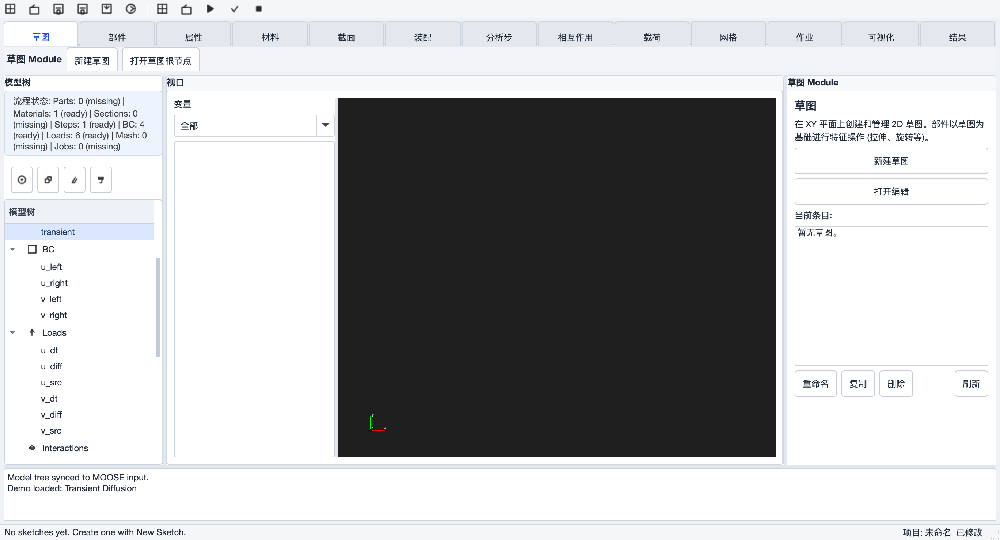
1.2 部件 Part（草图特征造型，OCC 内核）
基于草图闭环，经 OccBridge 调用 OpenCASCADE 完成特征造型，结果回注 Gmsh 并自动剖分网格、载入视口；特征落盘为 .brep，模型树挂 Features 节点并关联 Part。
- 拉伸 Extrude：草图闭环沿 +Z 拉伸指定距离（负值反向）生成实体。
- 旋转 Revolve：绕 Y 轴旋转指定角度生成回转体。
- 放样 Loft：两个截面草图 + Z 向抬升，实体放样（当前每截面取第一个闭环）。
- 扫掠 Sweep：轮廓草图沿单连通路径草图扫掠（暂不支持整圆/分支路径）。
- 切除 / 圆角 / 倒角：面板中已预留按钮，当前为禁用占位（规划在 WS3 迭代）。
1.3 几何与网格 Mesh（Gmsh 面板，对应 Abaqus Mesh + 几何工具）
Mesh 页签内嵌完整的 Gmsh 前处理面板（GmshPanel），是预处理的核心工作区：
几何
- 几何导入：STEP / IGES / BREP（OCC
importShapes）与 .geo 脚本；支持导入后自动剖分、项目重开时按路径自动重载。 - 几何基元：Box / Cylinder / Sphere 参数化创建；示例盒（Use Sample Box）一键建模并自动建立 solid / boundary 物理组。
- 变换：平移 / 旋转 / 缩放，支持实体 ID 表达式（如
1,2、2:5）、实体模板与对话框拾取；视口中点选实体可直接回灌输入框。 - 布尔运算：合并 Fuse / 剪切 Cut / 求交 Intersect，支持 Remove Object/Tool 选项。
- 几何导出：BREP / GEO（暂不支持导出 STEP）。
物理组（Physical Groups）
- 分组创建 / 更新 / 删除 / 刷新，与求解侧联动：边界组自动同步为 MOOSE 边界候选，体组同步为材料 block 候选。
- 统计表（维度 / Tag / 名称 / 实体数 / 单元数），点选行可在视口高亮过滤对应网格分组。
网格剖分
- 尺寸控制：全局尺寸、点尺寸（Entity Size 目前仅支持 0 维点）、Distance→Threshold 尺寸场（按边/面/体距离渐变）。
- 算法：2D（MeshAdapt / Delaunay / Frontal / BAMG / DelQuad）、3D（Delaunay / Frontal / HXT）；生成维度 Auto/1D/2D/3D，超高维请求自动降级。
- 单元：1–4 阶、高阶优化（Simple / Elastic / FastCurving）、四边形/六面体重组（Recombine）、光顺与优化迭代、MSH 2.2/4.1 版本。
- 质量检查：生成后自动统计 minSICN 最小/均值/最大值与各物理组单元计数（输出在日志区）。
- 实时预览：生成的
.msh立即载入 VTK 视口，并同步给 Job 面板作为求解网格。
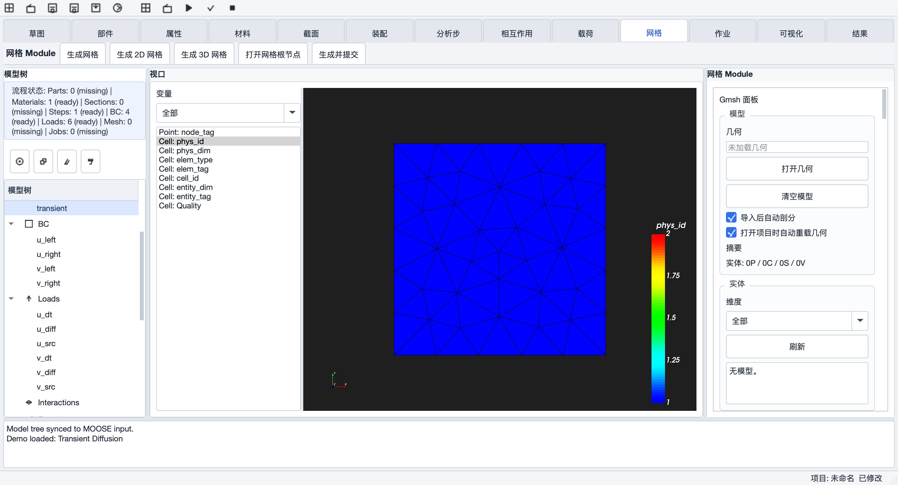

1.4 属性 Property / Material / Section（对应 Abaqus Property）
- 材料：Material 页新建材料（默认 GenericConstantMaterial 预设）；属性编辑器提供快捷参数表单与材料模板（常数、Parsed k(T)、线弹性、热膨胀等）。
- 截面：Section 页新建 Solid Section（材料 + block 引用）；半成品 截面节点目前不进入 MOOSE 输入文件，材料实际由 Materials 根直接映射到
[Materials]。 - 属性编辑器 PropertyEditor：常规 / 参数 / 预览三页签；通用 key=value 参数表 + 按类型显隐的快捷表单 + 模板库 + 分组指派（BC/Loads 绑定 boundary/block）+ 全树校验汇总（必填检查、问题过滤、跳转定位）。
- 未覆盖 壳截面、梁/桁架截面、复合材料铺层、材料库管理、属性赋予的视口着色——对照 Abaqus Property 模块尚属空白。
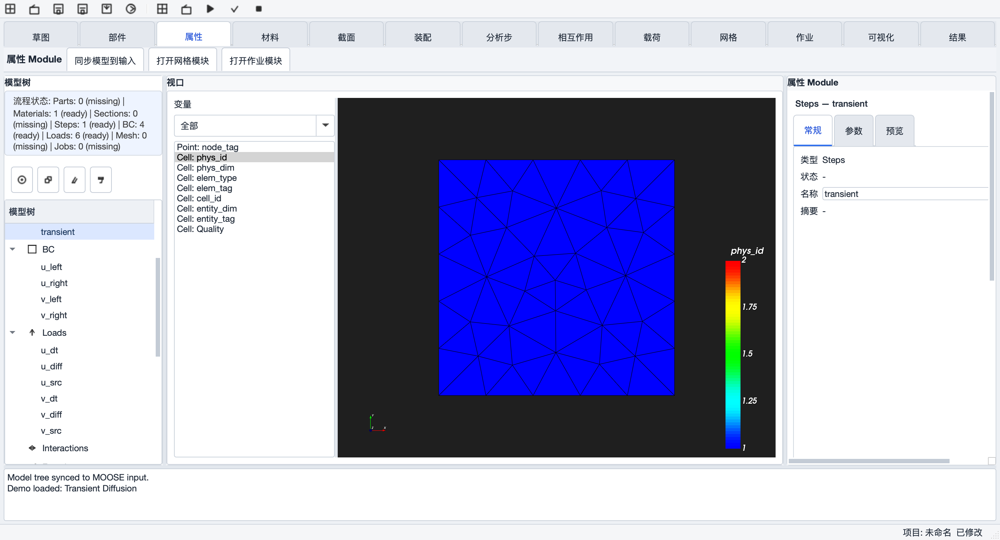
1.5 装配 Assembly 占位
Assembly 页当前仅支持创建“装配别名”节点（绑定 Parts 列表），没有实例化、平移/旋转定位、装配约束、阵列镜像等 Abaqus 装配能力。相关节点不参与网格与求解。后续迭代重点。
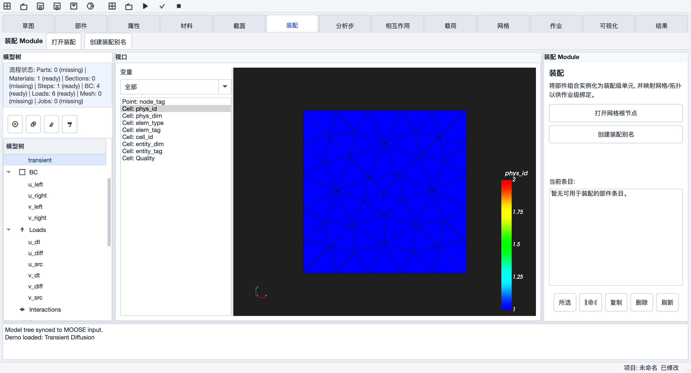
1.6 分析步 Step
- 提供 Static / Transient / Steady 预设，参数化编辑（dt、num_steps、end_time 等）。
- 步序列预览展示多步顺序，但半成品：生成 MOOSE
[Executioner]时只取第一个分析步，多步仅控制台告警。 - 未覆盖 增量控制、收敛/稳定化参数、Amplitude 幅值曲线、Field/History Output 请求（Outputs 根节点可建 Exodus 输出，但无按变量/频率的精细配置界面）。
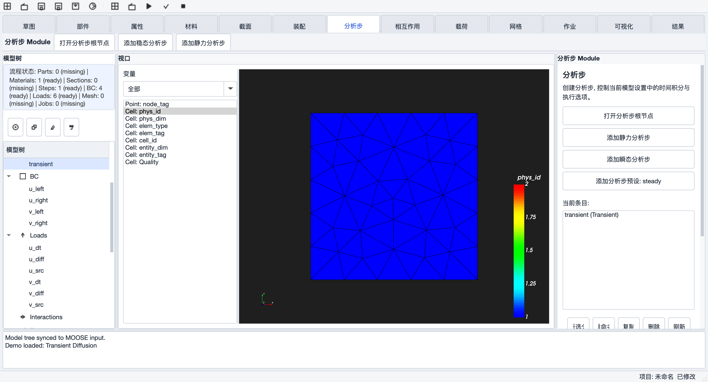
1.7 相互作用 Interaction 占位
可在模型树建立 Interaction / Tie 节点并编辑参数，但不进入生成的 MOOSE 输入。接触对、耦合、MPC、连接器等 Abaqus Interaction 能力均未开始。
1.8 载荷与边界 Load / BC
- 边界条件 BC：模型树 BC 根下建 Dirichlet / Neumann 等节点（模板可选 Fixed / Prescribed / Neumann），通过属性编辑器绑定到物理组（boundary 参数）；Gmsh 面板物理组可一键 “Insert BCs From Groups” 自动生成各边界子块。
- 载荷 Loads：Load 页提供 BodyForce（体力）与热源预设；Loads 根节点映射为 MOOSE
[Kernels]块。 - 函数 / 变量：Functions（ParsedFunction）、Variables（order/family）根节点支持自由建模，直接进入
.i。 - 未覆盖 集中力/力矩、压力/面力、对称边界、载荷随分析步激活/失活等。
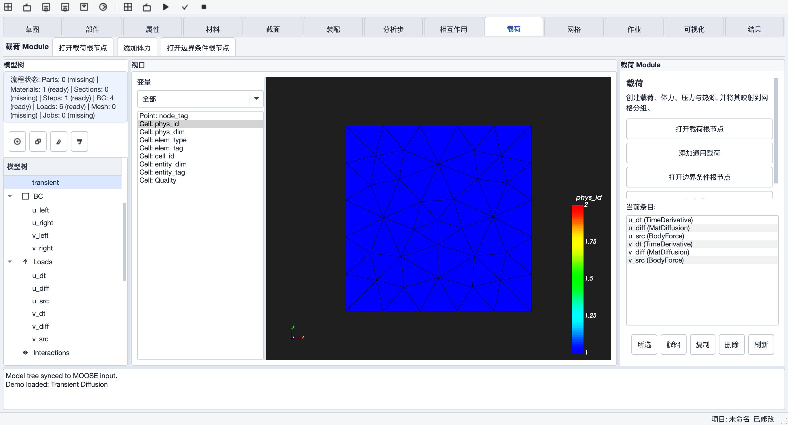
二、有限元计算（Solving）
本阶段的核心是：模型树 → MOOSE .i → Runner 调度独立计算进程 → 回收 .e。MOOSE 以独立进程运行（MPI 需要），UI 只负责生成输入、调度与监控。
备注：什么是「MOOSE（外部进程，MPI）」？（点击展开）
MOOSE（Multiphysics Object-Oriented Simulation Environment）是由美国爱达荷国家实验室（INL）开源的强大的有限元求解框架。在本架构中，它扮演的是“中央处理器 / 求解器”的角色。
它是做什么的？
偏微分方程（比如 -∇·∇u = 0）的弱形式转换、HHT 时间积分……所有这些“高难度数学与物理计算”全部由 MOOSE 负责。它底层封装了顶级的数学库（libMesh 和 PETSc），专门用来组装海量的刚度矩阵（KU=F）并进行求解。
什么是 MPI（Message Passing Interface）？
面对几十上百万个网格，单核 CPU 是算不动的。MPI 是一种分布式并行计算协议：借助 MPI，MOOSE 可以把一个大网格“撕”成好几块，分配给电脑的多个 CPU 核心、甚至局域网内的多台服务器同时并行计算，算完后再把结果拼装起来。
为什么要作为“外部进程”运行？
这是非常成熟的软件工程设计——有限元计算非常耗费系统资源（CPU 满载、内存狂飙）：
- 防假死：如果把 MOOSE 和 Qt UI 编译在同一个进程里，一旦开始计算，界面的主线程就会被阻塞，导致软件“无响应”。
- 防崩溃隔离：如果某个非线性算例因为参数设置不当（比如 HHT 参数设错导致矩阵发散）而引发求解器崩溃（核心转储），作为外部独立进程的 MOOSE 崩溃不会带着 Qt 界面一起闪退——Qt 端只需捕获进程异常状态，弹出“计算发散失败”的友好提示即可。
2.1 模型树 → .i 自动生成
“Sync Model -> MOOSE Input”（Ctrl+Shift+R）把模型树节点翻译为 MOOSE 输入块并注入输入编辑器：
| 模型树根节点 | MOOSE Block | 说明 |
|---|---|---|
| Mesh（网格文件） | [Mesh] | FileMesh 注入网格路径；物理组名自动带入 |
| Functions | [Functions] | 默认 ParsedFunction |
| Variables | [Variables] | order / family 可配 |
| Materials | [Materials] | 默认 GenericConstantMaterial，block 绑定体组 |
| Loads | [Kernels] | BodyForce / 热源等作为核项（语义错位见自检表 #18） |
| BC | [BCs] | Dirichlet / Neumann，boundary 绑定边界组 |
| Steps（取第一个） | [Executioner] | Transient / Steady 参数映射 |
| Outputs | [Outputs] | 默认 Exodus |
暂不支持从树生成 ICs / AuxVariables / Postprocessors / Preconditioning（内置模板中含部分示例）。
2.2 输入模板与编辑器
- 5 套内置完整模板：瞬态扩散（GeneratedMesh / FileMesh）、非线性热传导（ParsedMaterial）、热-力耦合（TensorMechanics action，自动切换
combined-opt可执行）。 - 输入编辑器为全文本 .i 编辑：可手改、插入网格块（Insert Mesh Block）、从物理组生成边界、Write Input 落盘。
- 演示案例菜单（Demos）：一键载入/运行瞬态扩散、非线性热传导、热-力耦合——是最可靠的端到端验证入口。
2.3 作业提交与 Runner 调度
| Runner | 实现状态 | 说明 |
|---|---|---|
| Local | 可用 | QProcess 本机执行 mpiexec -n N <exec> -i case.i，stdout/stderr 实时入日志 |
| WSL | 半成品 | 仅命令包装 wsl -- ...，未做 Windows↔WSL 路径转换 |
| Remote (SSH) | 占位 | 预留接口，当前选择 Remote 实际仍在本地执行（静默回退，需警惕） |
- 作业页：Run / Stop / Retry / Open Log / Open Result + 作业表（名称 / 状态 / 开始时间 / 耗时 / 网格 / 可执行 / 结果）。
- 一步提交：“Generate & Submit”/“Submit (Mesh + Sync + Run)”：自动补齐最小流程节点 → 找/生成网格 → 同步模型树 → 触发运行。
- 结果回收：运行中从日志实时捕捉 .e 文件名，结束后扫描工作目录取最新 .e，自动挂 Results 根并载入 VTK 视口。
- Check Input：透传 MOOSE
--check-input做输入检查。 - 可执行探测：自动查找
external/moose/test/moose_test-opt，支持GMP_MOOSE_EXEC环境变量与界面指定。
.i + .msh、回收 .e（Remote Runner 为预留接口，当前版本尚未真正接通，需手工拷贝或用 Local 模式验证链路）。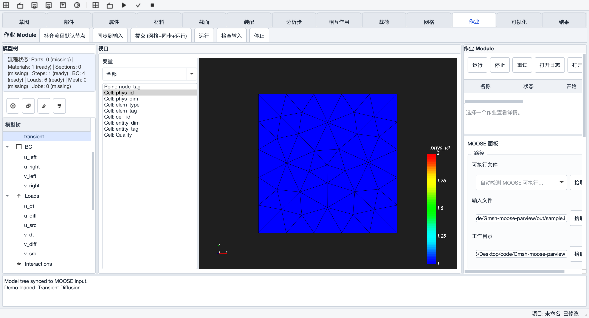
三、后处理（Postprocessing）
备注：什么是「VTK（ExodusII 可视化）」？（点击展开）
VTK（Visualization Toolkit）是一个开源的、用于三维计算机图形学、图像处理和可视化的 C++ 软件系统。在本架构中，它扮演的是“后处理器 / 渲染器”的角色。
什么是 ExodusII 格式？
当 MOOSE 经过漫长的计算，得出每个网格节点上的温度 u 或位移数据后，需要把这些结果保存到硬盘上。ExodusII 是目前有限元领域（尤其是北美体系）最流行的二进制输出格式，能非常高效地存储网格拓扑结构以及随时间变化的物理量。
VTK 在这里的作用
计算结果只是一堆冷冰冰的数字（比如“节点 1024 在第 5 秒的温度是 85.3 度”）。VTK 的任务是读取这些 ExodusII 文件，并把它们渲染成工程人员能看懂的云图（高温区域显示为红色、低温显示为蓝色）、等值线或形变动画。
如何与 Qt 6 结合？
VTK 原生支持与 Qt 集成：通过 QVTKOpenGLNativeWidget 这样的控件，直接在 Qt 的窗口框架内嵌入一个 3D 渲染画布——GMP-ISE 中央的视口正是这样做的。用户可以用鼠标旋转、缩放、剖切查看仿真结果。
3.1 结果管理 Results
- 结果列表自动收集求解输出（.e / .e-s*）与网格、文本文件，支持类型过滤（Solver / Mesh / Text）。
- 双击按类型分流：ExodusII → VTK 视口；文本 → 内置文本预览（截断 8KB）；选中行显示文件详情与前 6 行预览。
- 求解完成时结果自动挂树，无需手工导入。
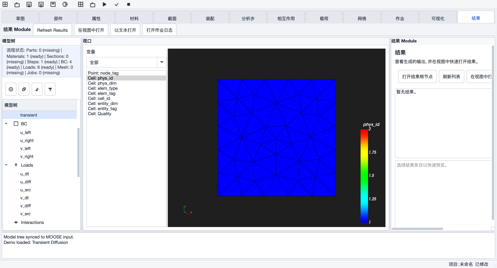
3.2 可视化 Visualization（内嵌 VTK 视图）
右侧控制区含 10 个控制页：Scalar / Mesh / View / Slice / Time / Vector / Deformation / Probe / Plot / Table。
- ExodusII 加载 可用：开启全部节点/单元/全局数组；自研过滤器修复 MOOSE 部分块变量丢失问题。
- 标量云图 可用：点/单元变量切换、色标预设（Rainbow / Grayscale，Blue-Red 有缺陷）、显示方式（Surface / Wireframe / Surface+Edges）、色标四角定位、自动/手动范围。
- 时间序列 半成品：时间滑块逐帧查看；Auto Refresh 为文件变更监控（边算边看），无动画播放。
- 变形显示 可用：位移向量 + 缩放系数（vtkWarpVector），自动优先识别 disp* 数组。
- 探针 Probe 半成品：点击拾取节点/单元，显示 id / 坐标 / 当前场值（单行文本）；无时间历程曲线、无多点列表。
- 切片 Slice 半成品：X/Y/Z 平面裁切，仅网格模式可用，Exodus 结果切片未实现。
- 向量 Vector 半成品：向量场模长统计（min/max/mean/rms）与“应用到变形”；无箭头/字形渲染。
- 曲线 Plot / 表格 Table 半成品：Plot 为数组统计 + 前 500 行数值的文本转储（无图表绘制）；Table 为 QTableWidget 前 N 行（含 Magnitude 列）。
- 视图 可用：标准视角（前/右/顶/轴测）、坐标轴标记、外框线、一键重置过滤器、截图（Ctrl+Shift+P 存 PNG）。
- 视图状态持久化 可用：几乎全部控件状态随项目文件保存/恢复。
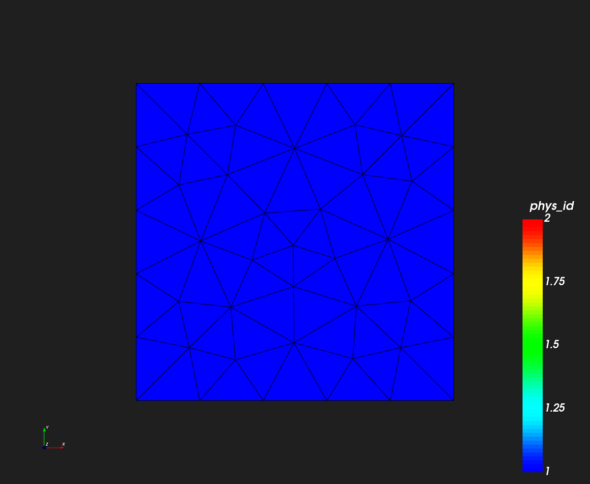
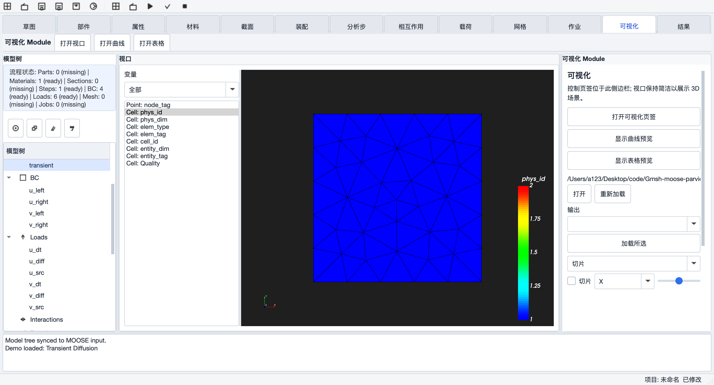
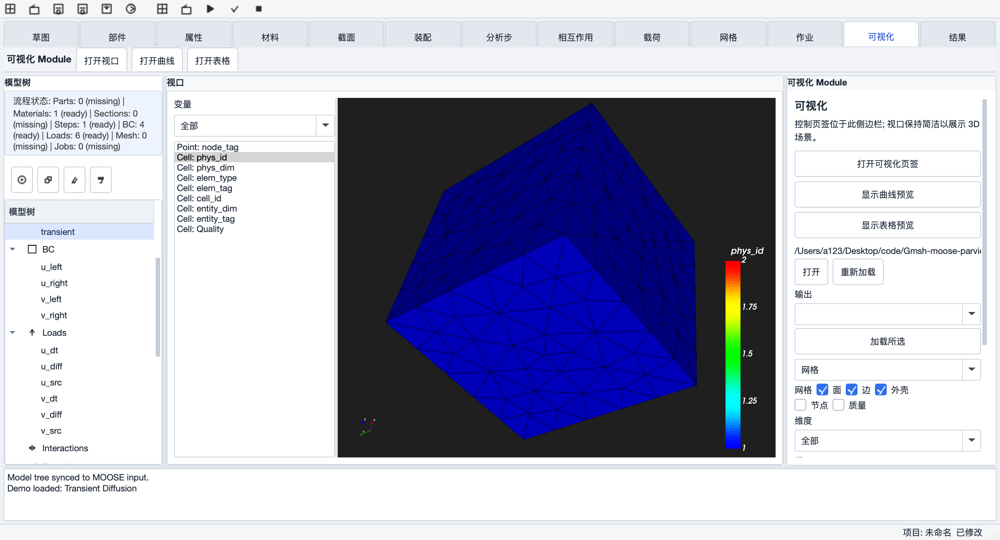

3.3 网格拾取联动（前/后处理桥接）
网格模式下支持 Group / Entity / Cell 三种拾取（黄色高亮），拾取结果以信号回灌 Gmsh 面板的实体输入框，实现“视口点选 → 参数填写”的闭环。
四、与 Abaqus 功能对照（基于参考文档）
参考《草图和零部件部分文档》《有限元前处理功能说明》梳理当前覆盖度：
4.1 参考文档工具栏提炼（草图与零部件）
《草图和零部件部分文档》以工具栏形式给出了 Sketcher 与 Part 模块的完整功能面，提炼如下（加粗项为当前已覆盖，其余列入自检表作为待补充功能）：
| 工具栏 | 功能项（提炼） |
|---|---|
| 草图工具栏（Sketcher） | 点、直线/线段、多段线、圆、圆弧（圆心-起点-终点 / 三点弧 / 切点弧线）、椭圆、样条曲线、矩形、构造线（两点构造线、曲线变构造线）、修剪与延伸、偏移、镜像、线性/圆周阵列、移动/复制、倒角、添加约束、添加尺寸、修改尺寸、参数管理器、投影、撤销 / 重做、保存 / 打开草图、删除 |
| 零部件工具栏（Part） | 创建部件、部件管理器、拉伸、旋转、扫掠、放样、创建切削（切除）、创建壳（抽壳）、圆角、创建倒角、镜像、编辑特征、禁用特征、删除特征、拆分边、拆分面、拆分体、创建基准面、创建基准轴、创建基准点、创建局部坐标系（基准坐标系） |
约束能力对照：文档要求的几何约束为 重合 / 水平 / 垂直 / 平行 / 相交 / 相切 / 同心 / 等长 / 对称 9 种，尺寸约束为 长度 / 距离 / 半径 / 直径 / 角度 5 种；当前 UI 暴露 5 种几何约束（水平/竖直/平行/垂直/重合）+ 距离/半径两种尺寸，求解器另支持等长 / 等半径 / 固定 / 角度（无界面入口）。
4.2 模块级覆盖度对照
| Abaqus 模块 | 文档能力项 | GMP-ISE 现状 |
|---|---|---|
| Sketcher 草图 | 线/圆/弧/矩形、约束、尺寸、撤销重做 | 主干可用 多段线/椭圆/样条/修剪/偏移/镜像/阵列未实现；约束仅 5 种有 UI |
| Part 零件 | 拉伸/旋转/扫掠/放样 | 已实现（轴向固定、放样单闭环等限制） |
| Part 零件 | 切除/圆角倒角/特征编辑与禁用/拆分/基准（面轴点）/局部坐标系 | 未实现（切除/圆角按钮已预留占位） |
| Property | 材料创建、实体截面 | 部分 材料可用；截面不进输入文件 |
| Property | 材料库、壳/梁截面、铺层、属性赋予、方向定义 | 未实现 |
| Assembly | 实例化/定位/约束/阵列镜像/装配布尔 | 占位（仅别名节点） |
| Step | 分析步创建 | 部分 预设可用，仅首步生效 |
| Step | 步序列、增量控制、收敛稳定化、Amplitude、Field/History Output | 未实现 |
| Interaction | 接触/绑定/耦合/MPC/连接器 | 占位（节点不进输入） |
| Load/BC | 位移边界、体力、温度/热流 | 部分 Dirichlet/Neumann/BodyForce/热源可用 |
| Load/BC | 集中力、压力、对称边界、随步激活 | 未实现 |
| Mesh | 全局/局部种子、网格控制、单元阶次、生成、质量检查 | 主干可用（Gmsh 算法体系）；局部重划分、结构化/扫掠网格未实现 |
| 视口/选择/查询 | 视图导航、显示模式、剖切、选择过滤 | 主干可用；测量与查询（距离/面积/质心等）未实现 |
| Job / Results | 作业提交、监控、结果查看 | 可用（Local）；远程投递待接通 |
五、功能自检表
以下自检表基于当前源码逐项核对（状态口径：已实现 真实可用；半成品 部分实现/有限制；占位 仅界面/接口预留，无实际功能）。
5.1 预处理 — 草图与零件
| # | 功能 | 状态 | 说明 / 限制 |
|---|---|---|---|
| 1 | 草图绘制（线/圆/弧/矩形、吸附、删除） | 已实现 | VTK 2D 画布，10px 端点吸附 |
| 2 | 几何约束（水平/竖直/平行/垂直/重合） | 已实现 | planegcs 求解，冲突有诊断 |
| 3 | 等长/等半径/固定/角度约束 | 半成品 | 求解器已支持，无 UI 入口 |
| 4 | 尺寸约束（距离/半径驱动） | 已实现 | 改值重解；参考尺寸仅存档 |
| 5 | 草图撤销/重做、复制、重命名 | 已实现 | YAML 快照粒度，限草图会话 |
| 6 | 多段线/椭圆/样条/点/三点弧/切点弧线/修剪延伸/偏移/镜像/阵列 | 占位 | Abaqus Sketcher 工具栏对照缺口 |
| 7 | 构造线 / 投影（两点构造线、曲线变构造线、投影参考） | 占位 | Sketcher 工具栏提炼，辅助绘图能力 |
| 8 | 草图倒角、移动/复制图元 | 占位 | 画布不支持拖拽移动，无倒角工具 |
| 9 | 参数管理器 / 修改已有尺寸 | 半成品 | 求解器支持改尺寸值重解；UI 仅有“添加尺寸”，集中参数管理待补 |
| 10 | 约束标记可视化、图元拖拽 | 占位 | 画布只画图元 |
| 11 | 拉伸 / 旋转 / 放样 / 扫掠特征 | 已实现 | OCC 内核；轴向固定（+Z / Y 轴）、放样取首闭环、扫掠路径需单连通 |
| 12 | 特征自动成 Part + 自动网格 + 视口显示 | 已实现 | .brep 落盘 features/ 目录 |
| 13 | 切除 / 圆角 / 倒角 | 占位 | 按钮禁用，规划 WS3 |
| 14 | 部件镜像、创建壳（抽壳） | 占位 | Part 工具栏提炼，待补充 |
| 15 | 基准面/轴/点、局部坐标系、拆分边/面/体、特征编辑/禁用/删除 | 占位 | Datums 根节点无任何创建入口；特征删除仅能删树节点，不重算模型 |
| 16 | 部件管理器（部件列表：重命名/复制/删除/刷新） | 已实现 | Part 页基础版可用；无特征级抑制/激活 |
5.2 预处理 — 几何与网格（Gmsh 面板）
| # | 功能 | 状态 | 说明 / 限制 |
|---|---|---|---|
| 17 | STEP / IGES / BREP / .geo 导入 | 已实现 | OCC importShapes；可导入后自动剖分 |
| 18 | 几何基元（Box/Cylinder/Sphere） | 已实现 | 仅 3 种；示例盒自动建物理组 |
| 19 | 平移 / 旋转 / 缩放 | 已实现 | 仅 OCC 内核实体；支持拾取回灌 |
| 20 | 布尔 Fuse / Cut / Intersect | 半成品 | 布尔后物理组实体 tag 不自动迁移，需手动重建 |
| 21 | 物理组管理 + 统计 + 视口高亮联动 | 已实现 | 分组同步给求解侧（边界/体组） |
| 22 | 尺寸场（Distance→Threshold） | 半成品 | 仅单一模板，无多场组合、无参数回显编辑 |
| 23 | 实体尺寸 Entity Size | 半成品 | 仅支持 0 维点；1/2/3 维选项为空操作 |
| 24 | 2D/3D 算法、1–4 阶、高阶优化、重组、光顺 | 已实现 | HXT 依赖 Gmsh 编译开关 |
| 25 | 网格生成 + .msh 写出 + 视口实时预览 | 已实现 | 同步 Job 网格路径与模型树 |
| 26 | 质量检查（minSICN 统计） | 半成品 | 仅日志文本；无色标/阈值告警/独立入口（视口侧有 Quality 色标） |
| 27 | 几何导出 STEP/IGES | 占位 | 仅 BREP/GEO |
| 28 | 几何随项目持久化 | 半成品 | 项目只存几何路径，操作历史不保存 |
5.3 预处理 — 材料 / 截面 / 分析步 / 相互作用 / 载荷
| # | 功能 | 状态 | 说明 / 限制 |
|---|---|---|---|
| 29 | 材料创建 + 模板 + 参数校验 | 已实现 | GenericConstant / Parsed k(T) / 线弹性 / 热膨胀等模板 |
| 30 | 截面 Solid Section | 半成品 | 节点可建可编辑，但不进入 MOOSE 输入 |
| 31 | 壳/梁截面、铺层、材料库、属性赋予着色 | 占位 | Abaqus Property 对照缺口 |
| 32 | 装配 Assembly | 占位 | 仅“别名”节点，无实例化/约束/阵列 |
| 33 | 分析步 Static/Transient/Steady | 半成品 | 仅第一个 Step 生成 [Executioner] |
| 34 | 增量控制、Amplitude、Field/History Output | 占位 | — |
| 35 | 相互作用 Interaction / Tie | 占位 | 节点不进 MOOSE 输入 |
| 36 | 边界 Dirichlet / Neumann + 物理组绑定 | 已实现 | 可从物理组一键生成边界块（默认 u=0 需手改） |
| 37 | 载荷 BodyForce / 热源 | 已实现 | Loads 根映射为 [Kernels]（语义错位待理顺） |
| 38 | 集中力、压力、对称边界、随步激活 | 占位 | — |
5.4 有限元计算 — 输入生成与作业调度
| # | 功能 | 状态 | 说明 / 限制 |
|---|---|---|---|
| 39 | 模型树 → .i 同步（7 类 block） | 已实现 | 通用 key=value 直出，无语法校验 |
| 40 | 5 套内置模板（扩散/非线性热/热-力耦合） | 已实现 | 热-力模板自动切换 combined-opt |
| 41 | 输入编辑器 + 网格块/边界注入 | 已实现 | 边界自动覆盖依赖启发式判断 |
| 42 | Local Runner（mpiexec / QProcess） | 已实现 | 日志实时显示，.e 自动回收 |
| 43 | WSL Runner | 半成品 | 无路径转换，仅 Windows 场景可用 |
| 44 | Remote (SSH) Runner —— 投递到独立计算节点 | 占位 | 选 Remote 实际静默本地执行，链路待接通 |
| 45 | 作业表 / 日志 / Stop / Check Input | 已实现 | Retry=重跑；Stop 为强杀 kill() |
| 46 | 一步提交（Generate & Submit） | 已实现 | 补齐节点→网格→同步→运行全自动 |
| 47 | 演示案例（3 套载入/运行） | 已实现 | 端到端验证入口 |
5.5 后处理 — 结果与可视化
| # | 功能 | 状态 | 说明 / 限制 |
|---|---|---|---|
| 48 | .e ExodusII 加载（含部分块变量修复） | 已实现 | 节点/单元/全局数组全开 |
| 49 | 标量云图 + 色标 + 范围控制 | 已实现 | Blue-Red 预设参数与 Rainbow 重复（缺陷） |
| 50 | 时间序列 | 半成品 | 手动滑块 + 文件变更监控；无动画播放 |
| 51 | 变形显示（位移向量缩放） | 已实现 | 仅 Exodus 模式 |
| 52 | 向量场 | 半成品 | 仅模长统计，无箭头/字形渲染 |
| 53 | 切片 | 半成品 | 仅网格模式；Exodus 结果切片未实现 |
| 54 | 探针 | 半成品 | 单次点击单行文本；无历程曲线/多点 |
| 55 | 曲线 Plot | 半成品 | 文本转储，无图表绘制 |
| 56 | 表格 Table | 已实现 | 前 N 行 + 模长列，功能较基础 |
| 57 | 网格 .msh 预览 + 过滤 + 拾取联动 | 已实现 | Group/Entity/Cell 拾取回灌 Gmsh 面板 |
| 58 | 视角预设 / 坐标轴 / 外框 / 截图 | 已实现 | Ctrl+Shift+P 存 PNG |
| 59 | 视图状态随项目持久化 | 已实现 | — |
| 60 | ParaView SDK / Catalyst 原位分析 | 占位 | Roadmap Phase 4 |
5.6 框架与工程化
| # | 功能 | 状态 | 说明 / 限制 |
|---|---|---|---|
| 61 | 项目保存/打开（.gmp.yaml）+ 最近项目 | 已实现 | New Project 无未保存确认 |
| 62 | 中英文界面切换（L10n） | 半成品 | 部分树根名/动态字符串未收录词条 |
| 63 | 导出调试包 Debug Bundle | 已实现 | 项目 + 日志 + 输入 + 网格/结果打包 |
| 64 | 全局撤销/重做（模型树级） | 占位 | 仅草图会话有快照撤销 |
| 65 | Plot/Table 预览页（中央页签） | 半成品 | 文本快照，非图表控件 |
材料依据：当前源码逐项核对（src/ 与 include/gmp/，2026-08-17 构建）+ 参考文档《草图和零部件部分文档》《有限元前处理功能说明》。截图由内置 GMP_SCREENSHOT_DIR 巡览机制实机生成。